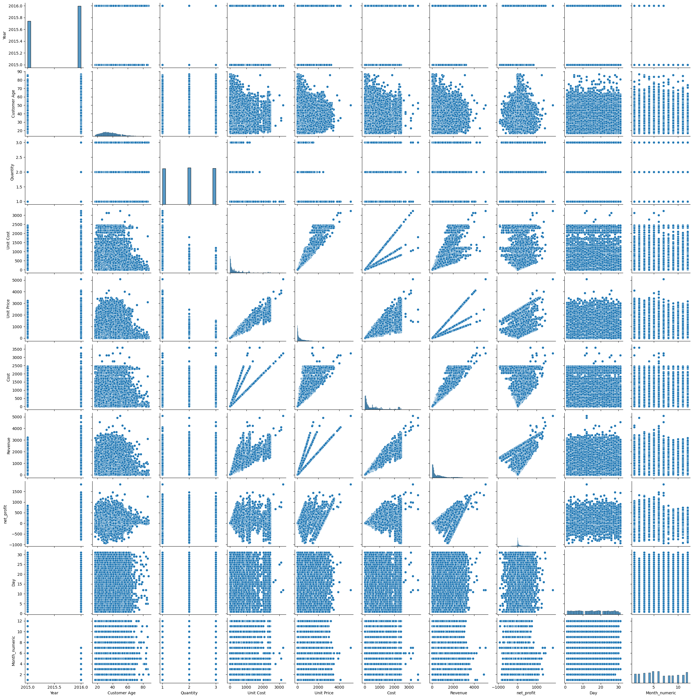
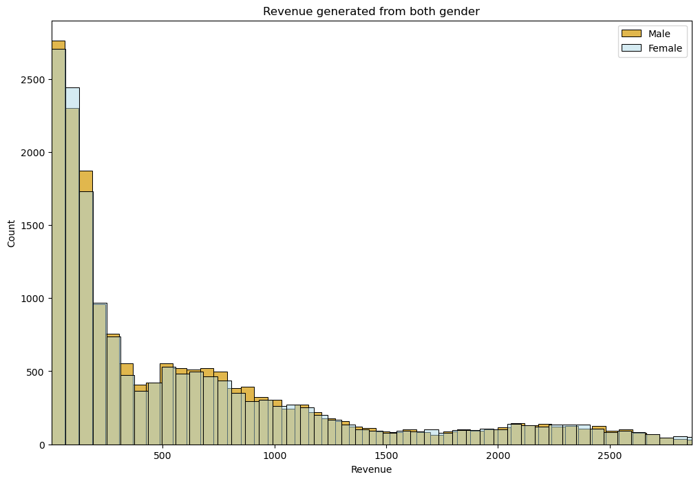
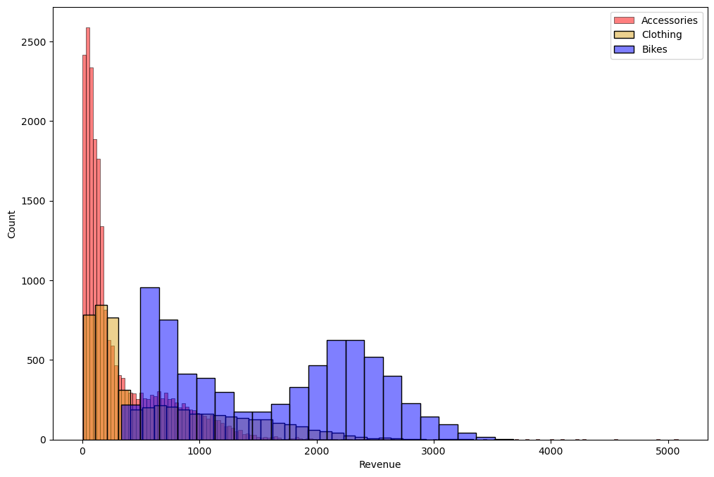
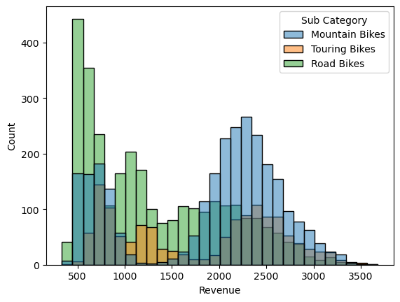
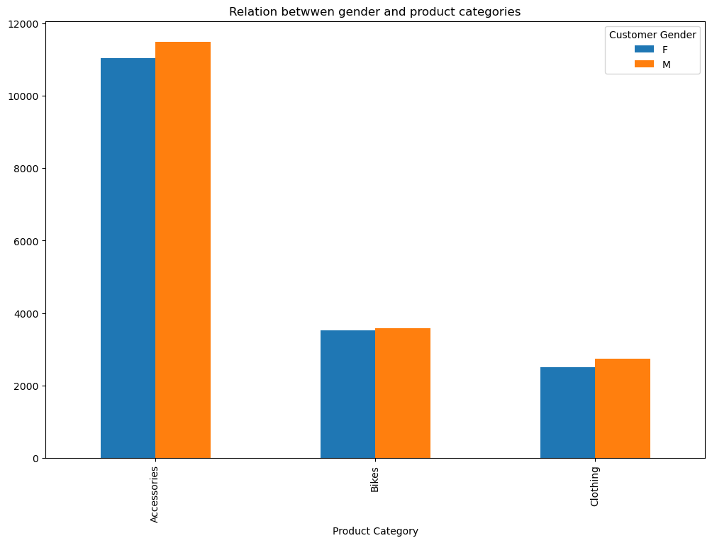
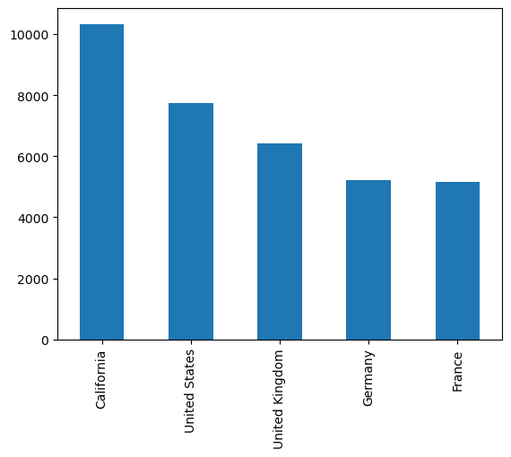
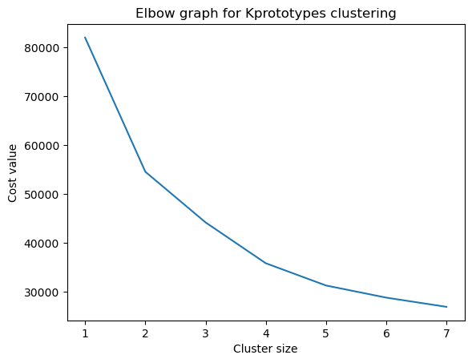
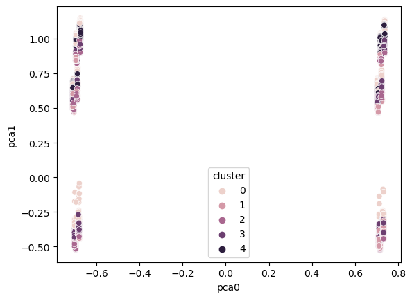
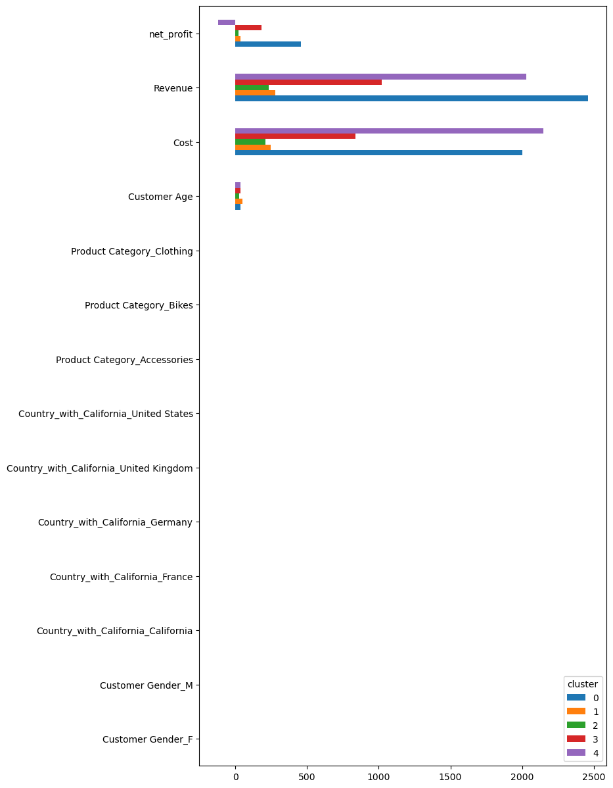

Code
import pandas as pd
import numpy as np
import matplotlib.pyplot as plt
import seaborn as sns
import statsmodels as sm
import scipyThis is a notebook preceeding after SQL script and Tableau analysis. The main focus on this notebook is to perform statistical analysis, to determine if a relation between predoctors exists statistically.
Clustering analysis is also performed to determine if customers with certain demographic information can be grouped.
import pandas as pd
import numpy as np
import matplotlib.pyplot as plt
import seaborn as sns
import statsmodels as sm
import scipy!pip install optunaLet’s have a look at the dataframe we will be working with:
sales_df = pd.read_csv('./sales_cleaned.csv', index_col='index')
sales_df.head()| Date | Year | Month | Customer Age | Customer Gender | Country | State | Product Category | Sub Category | Quantity | Unit Cost | Unit Price | Cost | Revenue | net_profit | Day | Month_numeric | |
|---|---|---|---|---|---|---|---|---|---|---|---|---|---|---|---|---|---|
| index | |||||||||||||||||
| 0 | 02/19/16 | 2016 | February | 29 | F | United States | Washington | Accessories | Tires and Tubes | 1.0 | 80.00 | 109.000000 | 80.0 | 109.0 | 29 | 19 | 2 |
| 1 | 02/20/16 | 2016 | February | 29 | F | United States | Washington | Clothing | Gloves | 2.0 | 24.50 | 28.500000 | 49.0 | 57.0 | 8 | 20 | 2 |
| 2 | 02/27/16 | 2016 | February | 29 | F | United States | Washington | Accessories | Tires and Tubes | 3.0 | 3.67 | 5.000000 | 11.0 | 15.0 | 4 | 27 | 2 |
| 3 | 03/12/16 | 2016 | March | 29 | F | United States | Washington | Accessories | Tires and Tubes | 2.0 | 87.50 | 116.500000 | 175.0 | 233.0 | 58 | 12 | 3 |
| 4 | 03/12/16 | 2016 | March | 29 | F | United States | Washington | Accessories | Tires and Tubes | 3.0 | 35.00 | 41.666667 | 105.0 | 125.0 | 20 | 12 | 3 |
print(f"The dataframe has {sales_df.shape[0]} rows and {sales_df.shape[1]} features")The dataframe has 34866 rows and 17 featuresFrom the dataframe, we can see that the interesting columns are categorical features: * Countries/States * Product categories/sub-categories * Customer’s gender
and the numberic features: * Cost * Revenue * Profit * Customer’s age
ALthough datetime features are also included in the dataframe, we will be ignoring these since the time-series analysis was analysed in our Tableau and SQL analysis.
sales_df.info()<class 'pandas.core.frame.DataFrame'>
Int64Index: 34866 entries, 0 to 34865
Data columns (total 17 columns):
# Column Non-Null Count Dtype
--- ------ -------------- -----
0 Date 34866 non-null object
1 Year 34866 non-null int64
2 Month 34866 non-null object
3 Customer Age 34866 non-null int64
4 Customer Gender 34866 non-null object
5 Country 34866 non-null object
6 State 34866 non-null object
7 Product Category 34866 non-null object
8 Sub Category 34866 non-null object
9 Quantity 34866 non-null float64
10 Unit Cost 34866 non-null float64
11 Unit Price 34866 non-null float64
12 Cost 34866 non-null float64
13 Revenue 34866 non-null float64
14 net_profit 34866 non-null int64
15 Day 34866 non-null int64
16 Month_numeric 34866 non-null int64
dtypes: float64(5), int64(5), object(7)
memory usage: 4.8+ MBsales_df.describe()| Year | Customer Age | Quantity | Unit Cost | Unit Price | Cost | Revenue | net_profit | Day | Month_numeric | |
|---|---|---|---|---|---|---|---|---|---|---|
| count | 34866.000000 | 34866.000000 | 34866.000000 | 34866.000000 | 34866.000000 | 34866.000000 | 34866.000000 | 34866.000000 | 34866.000000 | 34866.000000 |
| mean | 2015.569237 | 36.382895 | 2.002524 | 349.880567 | 389.232485 | 576.004532 | 640.870074 | 64.865542 | 15.667671 | 6.317845 |
| std | 0.495190 | 11.112902 | 0.813936 | 490.015846 | 525.319091 | 690.500395 | 736.650597 | 152.879908 | 8.770677 | 3.465317 |
| min | 2015.000000 | 17.000000 | 1.000000 | 0.670000 | 0.666667 | 2.000000 | 2.000000 | -937.000000 | 1.000000 | 1.000000 |
| 25% | 2015.000000 | 28.000000 | 1.000000 | 45.000000 | 53.666667 | 85.000000 | 102.000000 | 5.000000 | 8.000000 | 3.000000 |
| 50% | 2016.000000 | 35.000000 | 2.000000 | 150.000000 | 179.000000 | 261.000000 | 319.000000 | 27.000000 | 16.000000 | 6.000000 |
| 75% | 2016.000000 | 44.000000 | 3.000000 | 455.000000 | 521.000000 | 769.000000 | 902.000000 | 96.000000 | 23.000000 | 9.000000 |
| max | 2016.000000 | 87.000000 | 3.000000 | 3240.000000 | 5082.000000 | 3600.000000 | 5082.000000 | 1842.000000 | 31.000000 | 12.000000 |
It appears that most of the distribution are a long tailed distribution, skewed to the lower end.
sns.pairplot(sales_df)<seaborn.axisgrid.PairGrid at 0x7ffbb5595790>
sales_df.duplicated().mean()2.868123673492801e-05sales_df[sales_df.duplicated(keep=False)].sort_values(['Date', 'Revenue'])| Date | Year | Month | Customer Age | Customer Gender | Country | State | Product Category | Sub Category | Quantity | Unit Cost | Unit Price | Cost | Revenue | net_profit | Day | Month_numeric | |
|---|---|---|---|---|---|---|---|---|---|---|---|---|---|---|---|---|---|
| index | |||||||||||||||||
| 868 | 08/12/15 | 2015 | August | 43 | F | Germany | Bayern | Accessories | Bottles and Cages | 2.0 | 10.0 | 14.0 | 20.0 | 28.0 | 8 | 12 | 8 |
| 869 | 08/12/15 | 2015 | August | 43 | F | Germany | Bayern | Accessories | Bottles and Cages | 2.0 | 10.0 | 14.0 | 20.0 | 28.0 | 8 | 12 | 8 |
Out of 34866 entries, there was one entry that appears to be duplicated. It is quite possible that one person with the same demographic information purchased the exact same item on the same day. We will leave the duplicated entry as it is only one of them.
First, let’s investigate the claim of gender having no relation with revenue generated
plt.figure(figsize = (12, 8))
sns.histplot(sales_df[sales_df['Customer Gender'] == 'M'].Revenue,
color='goldenrod', alpha = 0.8, label = 'Male')
sns.histplot(sales_df[sales_df['Customer Gender'] == 'F'].Revenue,
color='lightblue', alpha = 0.5, label = 'Female')
plt.xlim((sales_df['Revenue'].min(), sales_df['Revenue'].quantile(0.99)))
plt.title('Revenue generated from both gender')
plt.legend()
plt.show()
From the figure above, we can see that the two distributions from each gender are almost identical.
However, it apperas that the distributions consist of 3 difference distribution, with a right skewed, long tail distribution (likely to be from product sales with low pricing), and 2 gaussian mixture distributions (centered at 600 and 2200)
sales_df['Product Category'].unique()array(['Accessories', 'Clothing', 'Bikes'], dtype=object)Coincidently, it apperas that we have exactly 3 different product categories. Let’s investigate if these 3 product correspond to the 3 distributions we see.
plt.figure(figsize=(12, 8))
for prod, color in zip(sales_df['Product Category'].unique(), ['red', 'goldenrod', 'blue']):
sns.histplot(sales_df[sales_df['Product Category'] == prod]['Revenue'],
label = prod, color=color, alpha = 0.5)
plt.legend()
plt.show()
It appers that our guess was wrong, both accessories and cloting made up the right-skewed distribution, whereas the gaussian mixture distributin was from bikes category alone.
bike_df = sales_df[sales_df['Product Category'] == 'Bikes']
sns.histplot(bike_df, x='Revenue', hue='Sub Category', bins=30, palette='tab10', alpha=0.5)<AxesSubplot: xlabel='Revenue', ylabel='Count'>
To determine if different gender had different spending habits, we will be running a unpaired t-test to investigate if the two distribution is the same.
The hypothesis of a unpaired t-test is as follows: \[H_0: \bar{X} - \bar{Y} = 0\] \[H_1: \bar{X} - \bar{Y} \neq 0\]
where X and Y are the two distribution compared.
ttest_stat, ttest_p = scipy.stats.ttest_ind(sales_df[sales_df['Customer Gender'] == 'M'].Revenue,
sales_df[sales_df['Customer Gender'] == 'F'].Revenue )
print(f'The p-vale for unpaired t-test for both gender is {ttest_p:.4f}')The p-vale for unpaired t-test for both gender is 0.9855Indeed, we can see that the p-value is around 0.98, which is highly unlikely that the mean of revenue spent for each gender were different.
However, from the distribution above, we can see that it is highly not normal. Although we do have 34688 entries, and the central limit theorem works in our favour, and the assumption of similar means from any sample drawn from the distribution is the same.
Just to be safe, we will be running a Wilcoxon test (alternative non-parametric t-test).
whitney_stat, whitney_p = scipy.stats.mannwhitneyu(sales_df[sales_df['Customer Gender'] == 'M'].Revenue,
sales_df[sales_df['Customer Gender'] == 'F'].Revenue )
print(f'The p-vale for unpaired t-test for both gender is {whitney_p:.4f}')The p-vale for unpaired t-test for both gender is 0.2144Indeed, from the p-value above, we can see that it is still higher than the threshold of 5%.
There is no statistical significant that each gender had different spending habit!
Now that we have determined that the amount spent had no relation to the gender of customers, let’s investigate if there was any difference of product bought for each gender.
Let’s look at the frequency table for product categories and gender.
gender_category_df = sales_df.groupby(['Customer Gender', 'Product Category'])['Product Category'] \
.count().unstack().T
gender_category_df| Customer Gender | F | M |
|---|---|---|
| Product Category | ||
| Accessories | 11042 | 11492 |
| Bikes | 3514 | 3579 |
| Clothing | 2505 | 2734 |
gender_category_df.plot(kind = 'bar', figsize=(12, 8))
plt.title('Relation betwwen gender and product categories')
plt.show()
From the table, we can see that for each product cetegory, the distribution was in a similar scale, with slightly more frequency for male’s clothing transaction.
Although the numbers are quite similar, we still need to convert the corresponding chi2 statistic to our p-value of chi2 distribution, in this case, the degree of freedom (DOF) used will be the parameters in variable’s number of categories:
\[ \begin{aligned} DOF & = (\text{\# of product categories - 1}) \times (\text{\# of gender categories - 1}) \\ DOF & = 2 \end{aligned} \]
We will be using scipy’s chi2 test of independence for contigency tables.
The hypothesis are as follows:
\[ H_0 = \text{The relation between variables are independent}\] \[ H_1 = \text{The relation between batiables are not independent}\]
scipy.stats.chi2_contingency(gender_category_df)(3.7174085431453174,
0.15587447055732034,
2,
array([[11026.57528825, 11507.42471175],
[ 3470.82180348, 3622.17819652],
[ 2563.60290828, 2675.39709172]]))From the above result, we can see that the p-value is 0.1558, which we failed to reject the null hypothesis that gender is independent of product bought.
There is no statistical significant proof that gender is related to product bought.
def chi2_test(df, col1, col2, show_table = True):
assert col1 in df.columns and col2 in df.columns, 'Column names provide can not be found in dataframe!'
_cont = df.groupby([col1, col2])[col2].count().unstack()
_result = scipy.stats.chi2_contingency(_cont)
if show_table:
print('------------------------------')
print('Observed contigency table')
display(_cont)
print('------------------------------')
print('Expected frequency table')
display(pd.DataFrame(_result[-1], index = _cont.index,
columns = _cont.columns))
print(f'The p-value of chi2 independence test is {_result[1]:.4f}')chi2_test(sales_df, 'Country', 'Product Category')------------------------------
Observed contigency table| Product Category | Accessories | Bikes | Clothing |
|---|---|---|---|
| Country | |||
| France | 3293 | 1152 | 723 |
| Germany | 3200 | 1291 | 710 |
| United Kingdom | 3986 | 1497 | 938 |
| United States | 12055 | 3153 | 2868 |
------------------------------
Expected frequency table| Product Category | Accessories | Bikes | Clothing |
|---|---|---|---|
| Country | |||
| France | 3340.093845 | 1051.357311 | 776.548844 |
| Germany | 3361.421844 | 1058.070699 | 781.507457 |
| United Kingdom | 4149.911490 | 1306.262634 | 964.825876 |
| United States | 11682.572822 | 3677.309356 | 2716.117823 |
The p-value of chi2 independence test is 0.0000From the above result, we can see that there was deviation in sales, especially between United States with other countries. Infact, the corresponding p-value is 0, indicating there is a relation between the distribution of product sold and countries.
After we have established that there are no interesting relation between the variables, let’s dive deep into clustering analysis.
The aim of this section is to analyize customers behaviours, and determine if there are any groups with different spending habits, corresponding to different demographics.
sales_df.head()| Date | Year | Month | Customer Age | Customer Gender | Country | State | Product Category | Sub Category | Quantity | Unit Cost | Unit Price | Cost | Revenue | net_profit | Day | Month_numeric | |
|---|---|---|---|---|---|---|---|---|---|---|---|---|---|---|---|---|---|
| index | |||||||||||||||||
| 0 | 02/19/16 | 2016 | February | 29 | F | United States | Washington | Accessories | Tires and Tubes | 1.0 | 80.00 | 109.000000 | 80.0 | 109.0 | 29 | 19 | 2 |
| 1 | 02/20/16 | 2016 | February | 29 | F | United States | Washington | Clothing | Gloves | 2.0 | 24.50 | 28.500000 | 49.0 | 57.0 | 8 | 20 | 2 |
| 2 | 02/27/16 | 2016 | February | 29 | F | United States | Washington | Accessories | Tires and Tubes | 3.0 | 3.67 | 5.000000 | 11.0 | 15.0 | 4 | 27 | 2 |
| 3 | 03/12/16 | 2016 | March | 29 | F | United States | Washington | Accessories | Tires and Tubes | 2.0 | 87.50 | 116.500000 | 175.0 | 233.0 | 58 | 12 | 3 |
| 4 | 03/12/16 | 2016 | March | 29 | F | United States | Washington | Accessories | Tires and Tubes | 3.0 | 35.00 | 41.666667 | 105.0 | 125.0 | 20 | 12 | 3 |
Before we can continue to our analysis, we have to preprocess several things, notice that we have several categorical categories:
sales_df.select_dtypes('object').columnsIndex(['Date', 'Month', 'Customer Gender', 'Country', 'State',
'Product Category', 'Sub Category'],
dtype='object')We will be excluding the Date and Month columns, as the purpose is not a time series analysis, and the categorical columns will be one-hot encoded, in order to be feed in to a clustering algorithm.
from sklearn.compose import ColumnTransformer, make_column_selector
from sklearn.preprocessing import OneHotEncoder, StandardScaler, MinMaxScaler, MaxAbsScaler
from sklearn.pipeline import Pipeline
from sklearn.cluster import DBSCAN
from sklearn.metrics import silhouette_scoreFrom our previous analysis in Tableau, we have singled out that California state and England has some interesting behaviour, which their revenues increased significantly overtime.
For this reason, we will single out California state and treat it as a seperate entry in the Country column.
sales_df['Country_with_California'] = sales_df.apply(lambda x: x['Country'] if x['State'] != 'California'
else 'California', axis = 1)sales_df['Country_with_California'].value_counts().plot(kind='bar')<AxesSubplot: >
unwanted_col = ['Date', 'Year', 'Month', 'Quantity', 'Unit Cost', 'Unit Price', 'Day', 'Month_numeric',
'Country', 'Sub Category', 'State']
remaining_col = [x for x in list(sales_df.columns) if x not in unwanted_col]
remaining_col['Customer Age',
'Customer Gender',
'Product Category',
'Cost',
'Revenue',
'net_profit',
'Country_with_California']clustering_df = sales_df[remaining_col]clustering_df.head()| Customer Age | Customer Gender | Product Category | Cost | Revenue | net_profit | Country_with_California | |
|---|---|---|---|---|---|---|---|
| index | |||||||
| 0 | 29 | F | Accessories | 80.0 | 109.0 | 29 | United States |
| 1 | 29 | F | Clothing | 49.0 | 57.0 | 8 | United States |
| 2 | 29 | F | Accessories | 11.0 | 15.0 | 4 | United States |
| 3 | 29 | F | Accessories | 175.0 | 233.0 | 58 | United States |
| 4 | 29 | F | Accessories | 105.0 | 125.0 | 20 | United States |
ct = ColumnTransformer([('ohe', OneHotEncoder(), ['Customer Gender', 'Country_with_California',
'Product Category'])],
# ('mmscaler', MinMaxScaler(), make_column_selector(dtype_include=['number', 'object']))],
remainder='passthrough',
verbose_feature_names_out=False) pipe = Pipeline([('ohe', ct),
('mascaler', MaxAbsScaler())])
# ('clustering', DBSCAN())])clustering_transformed = pipe.fit_transform(clustering_df)clustering_tf_df = pd.DataFrame(clustering_transformed,
columns=pipe.get_feature_names_out())
clustering_tf_df| Customer Gender_F | Customer Gender_M | Country_with_California_California | Country_with_California_France | Country_with_California_Germany | Country_with_California_United Kingdom | Country_with_California_United States | Product Category_Accessories | Product Category_Bikes | Product Category_Clothing | Customer Age | Cost | Revenue | net_profit | |
|---|---|---|---|---|---|---|---|---|---|---|---|---|---|---|
| 0 | 1.0 | 0.0 | 0.0 | 0.0 | 0.0 | 0.0 | 1.0 | 1.0 | 0.0 | 0.0 | 0.333333 | 0.022222 | 0.021448 | 0.015744 |
| 1 | 1.0 | 0.0 | 0.0 | 0.0 | 0.0 | 0.0 | 1.0 | 0.0 | 0.0 | 1.0 | 0.333333 | 0.013611 | 0.011216 | 0.004343 |
| 2 | 1.0 | 0.0 | 0.0 | 0.0 | 0.0 | 0.0 | 1.0 | 1.0 | 0.0 | 0.0 | 0.333333 | 0.003056 | 0.002952 | 0.002172 |
| 3 | 1.0 | 0.0 | 0.0 | 0.0 | 0.0 | 0.0 | 1.0 | 1.0 | 0.0 | 0.0 | 0.333333 | 0.048611 | 0.045848 | 0.031488 |
| 4 | 1.0 | 0.0 | 0.0 | 0.0 | 0.0 | 0.0 | 1.0 | 1.0 | 0.0 | 0.0 | 0.333333 | 0.029167 | 0.024597 | 0.010858 |
| ... | ... | ... | ... | ... | ... | ... | ... | ... | ... | ... | ... | ... | ... | ... |
| 34861 | 0.0 | 1.0 | 0.0 | 1.0 | 0.0 | 0.0 | 0.0 | 0.0 | 1.0 | 0.0 | 0.436782 | 0.569167 | 0.292601 | -0.305103 |
| 34862 | 0.0 | 1.0 | 0.0 | 1.0 | 0.0 | 0.0 | 0.0 | 0.0 | 1.0 | 0.0 | 0.436782 | 0.644444 | 0.387839 | -0.189468 |
| 34863 | 0.0 | 1.0 | 0.0 | 1.0 | 0.0 | 0.0 | 0.0 | 0.0 | 1.0 | 0.0 | 0.436782 | 0.569167 | 0.311492 | -0.252986 |
| 34864 | 0.0 | 1.0 | 0.0 | 1.0 | 0.0 | 0.0 | 0.0 | 0.0 | 1.0 | 0.0 | 0.436782 | 0.569167 | 0.330972 | -0.199240 |
| 34865 | 0.0 | 1.0 | 0.0 | 1.0 | 0.0 | 0.0 | 0.0 | 0.0 | 1.0 | 0.0 | 0.436782 | 0.644444 | 0.308540 | -0.408252 |
34866 rows × 14 columns
dbs = DBSCAN()
dbs_result = dbs.fit(clustering_tf_df)To determine if the clustering is a good representation, we will be using the silhouette_score from sklearn.
The silhouette score is a metric defined to quantify how well the clustering is performing, by calculating the ratio between
It represents how confidence of the points being in a ‘correct’ cluster.
For more information, please refer to the sklearn documentation.

silhouette_score(clustering_tf_df, dbs_result.labels_)0.8174959664660164In the previous sub-section, we have explored the option of clustering the dataframe by one-hot-encoding. However, this method is not all sensible. The distance metric was arbitrary, although the Mahalanobis distance was used, there is no guarantee that the distance calculated is a good representation of the datapoints clustering (how is the distance between California and England comparable with the distance of $200 difference in revenue?).
Another method we will be using is the K-Prototypes clustering, which is a combination of K-means and K-modes algorithms.
from kmodes.kprototypes import KPrototypesclustering_df.head()| Customer Age | Customer Gender | Product Category | Cost | Revenue | net_profit | Country_with_California | |
|---|---|---|---|---|---|---|---|
| index | |||||||
| 0 | 29 | F | Accessories | 80.0 | 109.0 | 29 | United States |
| 1 | 29 | F | Clothing | 49.0 | 57.0 | 8 | United States |
| 2 | 29 | F | Accessories | 11.0 | 15.0 | 4 | United States |
| 3 | 29 | F | Accessories | 175.0 | 233.0 | 58 | United States |
| 4 | 29 | F | Accessories | 105.0 | 125.0 | 20 | United States |
numeric_scaler = ColumnTransformer([('std_scaler', StandardScaler(),
make_column_selector(dtype_include='number'))],
remainder = 'passthrough',
verbose_feature_names_out=False)
clustering_scaled_df = pd.DataFrame(numeric_scaler.fit_transform(clustering_df),
columns = numeric_scaler.get_feature_names_out()).apply(lambda x: pd.to_numeric(x, errors='ignore'))
clustering_scaled_df| Customer Age | Cost | Revenue | net_profit | Customer Gender | Product Category | Country_with_California | |
|---|---|---|---|---|---|---|---|
| 0 | -0.664363 | -0.718337 | -0.722022 | -0.234603 | F | Accessories | United States |
| 1 | -0.664363 | -0.763232 | -0.792612 | -0.371968 | F | Clothing | United States |
| 2 | -0.664363 | -0.818265 | -0.849628 | -0.398132 | F | Accessories | United States |
| 3 | -0.664363 | -0.580753 | -0.553690 | -0.044909 | F | Accessories | United States |
| 4 | -0.664363 | -0.682130 | -0.700301 | -0.293473 | F | Accessories | United States |
| ... | ... | ... | ... | ... | ... | ... | ... |
| 34861 | 0.145518 | 2.133260 | 1.148634 | -4.100438 | M | Bikes | France |
| 34862 | 0.145518 | 2.525734 | 1.805672 | -2.707167 | M | Bikes | France |
| 34863 | 0.145518 | 2.133260 | 1.278956 | -3.472485 | M | Bikes | France |
| 34864 | 0.145518 | 2.133260 | 1.413350 | -2.824908 | M | Bikes | France |
| 34865 | 0.145518 | 2.525734 | 1.258593 | -5.343261 | M | Bikes | France |
34866 rows × 7 columns
clustering_scaled_df.info()<class 'pandas.core.frame.DataFrame'>
RangeIndex: 34866 entries, 0 to 34865
Data columns (total 7 columns):
# Column Non-Null Count Dtype
--- ------ -------------- -----
0 Customer Age 34866 non-null float64
1 Cost 34866 non-null float64
2 Revenue 34866 non-null float64
3 net_profit 34866 non-null float64
4 Customer Gender 34866 non-null object
5 Product Category 34866 non-null object
6 Country_with_California 34866 non-null object
dtypes: float64(4), object(3)
memory usage: 1.9+ MBcat_position = [clustering_scaled_df.columns.get_loc(col) for col in
clustering_scaled_df.select_dtypes('object').columns]
cat_position[4, 5, 6]
clustering_scaled_df.select_dtypes('object').columnsIndex(['Customer Gender', 'Product Category', 'Country_with_California'], dtype='object')kproto = KPrototypes()
kproto.fit_predict(clustering_scaled_df, categorical = cat_position )KeyboardInterrupt: kproto.cost_NameError: name 'kproto' is not definedkproto_results ={'cluster_size': [], 'cost':[]}
clustering_scaled_df_sample = clustering_scaled_df.sample(frac=0.5)
for cluster_size in range(1, 8):
print(f'Fitting Kprototypes for cluster size :{cluster_size}')
_kproto = KPrototypes(n_clusters=cluster_size)
_labels = _kproto.fit_predict(clustering_scaled_df_sample, categorical = cat_position)
kproto_results['cluster_size'].append(cluster_size)
kproto_results['cost'].append(_kproto.cost_)
print(f'Cost: {_kproto.cost_}')
print('----------------------------------------')Fitting Kprototypes for cluster size :1
Cost: 81947.90456327623
----------------------------------------
Fitting Kprototypes for cluster size :2
Cost: 54558.85795930906
----------------------------------------
Fitting Kprototypes for cluster size :3
Cost: 44219.11078464947
----------------------------------------
Fitting Kprototypes for cluster size :4
Cost: 35877.56991156543
----------------------------------------
Fitting Kprototypes for cluster size :5
Cost: 31335.38134042823
----------------------------------------
Fitting Kprototypes for cluster size :6
Cost: 28857.25619255692
----------------------------------------
Fitting Kprototypes for cluster size :7
Cost: 26973.43389824587
----------------------------------------# import pickle
# import os
# with open('kproto_result.pkl', 'wb') as file:
# # assert not os.path.getsize(file) > 0, f"{file} already exists! Prone to overwriting."
# pickle.dump(kproto_results, file=file)
import pickle
with open('./kproto_result.pkl', 'rb') as file:
kproto_results = pickle.load(file)plt.plot(kproto_results['cluster_size'], kproto_results['cost'])
plt.title('Elbow graph for Kprototypes clustering')
plt.xlabel('Cluster size')
plt.ylabel('Cost value')Text(0, 0.5, 'Cost value')
kproto_best = KPrototypes(5)
kproto_best_label = kproto_best.fit_predict(clustering_scaled_df, categorical = cat_position)
clustering_scaled_df['kproto_labels'] = kproto_best_labelclustering_scaled_df| Customer Age | Cost | Revenue | net_profit | Customer Gender | Product Category | Country_with_California | kproto_labels | |
|---|---|---|---|---|---|---|---|---|
| 0 | -0.664363 | -0.718337 | -0.722022 | -0.234603 | F | Accessories | United States | 2 |
| 1 | -0.664363 | -0.763232 | -0.792612 | -0.371968 | F | Clothing | United States | 2 |
| 2 | -0.664363 | -0.818265 | -0.849628 | -0.398132 | F | Accessories | United States | 2 |
| 3 | -0.664363 | -0.580753 | -0.553690 | -0.044909 | F | Accessories | United States | 2 |
| 4 | -0.664363 | -0.682130 | -0.700301 | -0.293473 | F | Accessories | United States | 2 |
| ... | ... | ... | ... | ... | ... | ... | ... | ... |
| 34861 | 0.145518 | 2.133260 | 1.148634 | -4.100438 | M | Bikes | France | 4 |
| 34862 | 0.145518 | 2.525734 | 1.805672 | -2.707167 | M | Bikes | France | 4 |
| 34863 | 0.145518 | 2.133260 | 1.278956 | -3.472485 | M | Bikes | France | 4 |
| 34864 | 0.145518 | 2.133260 | 1.413350 | -2.824908 | M | Bikes | France | 4 |
| 34865 | 0.145518 | 2.525734 | 1.258593 | -5.343261 | M | Bikes | France | 4 |
34866 rows × 8 columns
clustering_ohe_df = ct.fit_transform(clustering_df)
clustering_ohe_df = pd.DataFrame(clustering_ohe_df, columns = ct.get_feature_names_out())clustering_ohe_df.head()| Customer Gender_F | Customer Gender_M | Country_with_California_California | Country_with_California_France | Country_with_California_Germany | Country_with_California_United Kingdom | Country_with_California_United States | Product Category_Accessories | Product Category_Bikes | Product Category_Clothing | Customer Age | Cost | Revenue | net_profit | |
|---|---|---|---|---|---|---|---|---|---|---|---|---|---|---|
| 0 | 1.0 | 0.0 | 0.0 | 0.0 | 0.0 | 0.0 | 1.0 | 1.0 | 0.0 | 0.0 | 29.0 | 80.0 | 109.0 | 29.0 |
| 1 | 1.0 | 0.0 | 0.0 | 0.0 | 0.0 | 0.0 | 1.0 | 0.0 | 0.0 | 1.0 | 29.0 | 49.0 | 57.0 | 8.0 |
| 2 | 1.0 | 0.0 | 0.0 | 0.0 | 0.0 | 0.0 | 1.0 | 1.0 | 0.0 | 0.0 | 29.0 | 11.0 | 15.0 | 4.0 |
| 3 | 1.0 | 0.0 | 0.0 | 0.0 | 0.0 | 0.0 | 1.0 | 1.0 | 0.0 | 0.0 | 29.0 | 175.0 | 233.0 | 58.0 |
| 4 | 1.0 | 0.0 | 0.0 | 0.0 | 0.0 | 0.0 | 1.0 | 1.0 | 0.0 | 0.0 | 29.0 | 105.0 | 125.0 | 20.0 |
from sklearn.decomposition import PCA
clustering_pca = PCA(2)
clustering_ohe_pca_df = clustering_pca.fit_transform(clustering_ohe_df)
clustering_ohe_pca_df = pd.DataFrame(clustering_ohe_pca_df,
columns = clustering_pca.get_feature_names_out())clustering_ohe_pca_df.head()| pca0 | pca1 | |
|---|---|---|
| 0 | 0.716264 | -0.516476 |
| 1 | 0.708054 | 0.470574 |
| 2 | 0.716230 | -0.523926 |
| 3 | 0.716310 | -0.506415 |
| 4 | 0.716275 | -0.514432 |
clustering_ohe_pca_df['cluster'] = kproto_best_labelsns.scatterplot(clustering_ohe_pca_df, x='pca0', y='pca1', hue = 'cluster')<AxesSubplot: xlabel='pca0', ylabel='pca1'>
clustering_ohe_df['cluster'] = kproto_best_labelclustering_ohe_df.groupby('cluster').mean()| Customer Gender_F | Customer Gender_M | Country_with_California_California | Country_with_California_France | Country_with_California_Germany | Country_with_California_United Kingdom | Country_with_California_United States | Product Category_Accessories | Product Category_Bikes | Product Category_Clothing | Customer Age | Cost | Revenue | net_profit | |
|---|---|---|---|---|---|---|---|---|---|---|---|---|---|---|
| cluster | ||||||||||||||
| 0 | 0.484785 | 0.515215 | 0.143757 | 0.193075 | 0.443337 | 0.125393 | 0.094439 | 0.092340 | 0.708814 | 0.198846 | 37.589192 | 2001.837880 | 2461.071878 | 459.233998 |
| 1 | 0.551656 | 0.448344 | 0.345826 | 0.121455 | 0.101923 | 0.172715 | 0.258081 | 0.790502 | 0.067916 | 0.141582 | 48.370712 | 244.929804 | 278.615209 | 33.685406 |
| 2 | 0.428810 | 0.571190 | 0.306502 | 0.158408 | 0.124190 | 0.186215 | 0.224685 | 0.772876 | 0.086138 | 0.140985 | 28.539619 | 210.933305 | 233.566451 | 22.633145 |
| 3 | 0.535751 | 0.464249 | 0.211211 | 0.145262 | 0.258591 | 0.193336 | 0.191600 | 0.570982 | 0.209997 | 0.219021 | 34.156369 | 838.286185 | 1022.031933 | 183.745748 |
| 4 | 0.482447 | 0.517553 | 0.345639 | 0.168295 | 0.020268 | 0.236699 | 0.229099 | 0.001810 | 0.944987 | 0.053203 | 37.166124 | 2149.917481 | 2027.964893 | -121.952588 |
clustering_scaled_df| Customer Age | Cost | Revenue | net_profit | Customer Gender | Product Category | Country_with_California | kproto_labels | |
|---|---|---|---|---|---|---|---|---|
| 0 | -0.664363 | -0.718337 | -0.722022 | -0.234603 | F | Accessories | United States | 2 |
| 1 | -0.664363 | -0.763232 | -0.792612 | -0.371968 | F | Clothing | United States | 2 |
| 2 | -0.664363 | -0.818265 | -0.849628 | -0.398132 | F | Accessories | United States | 2 |
| 3 | -0.664363 | -0.580753 | -0.553690 | -0.044909 | F | Accessories | United States | 2 |
| 4 | -0.664363 | -0.682130 | -0.700301 | -0.293473 | F | Accessories | United States | 2 |
| ... | ... | ... | ... | ... | ... | ... | ... | ... |
| 34861 | 0.145518 | 2.133260 | 1.148634 | -4.100438 | M | Bikes | France | 4 |
| 34862 | 0.145518 | 2.525734 | 1.805672 | -2.707167 | M | Bikes | France | 4 |
| 34863 | 0.145518 | 2.133260 | 1.278956 | -3.472485 | M | Bikes | France | 4 |
| 34864 | 0.145518 | 2.133260 | 1.413350 | -2.824908 | M | Bikes | France | 4 |
| 34865 | 0.145518 | 2.525734 | 1.258593 | -5.343261 | M | Bikes | France | 4 |
34866 rows × 8 columns
plt.figure(figsize = (8, 15))
clustering_ohe_df.groupby('cluster').mean().T.plot(kind = 'barh', figsize = (8, 15))<AxesSubplot: ><Figure size 800x1500 with 0 Axes>
Now that we have demonstrated on how to peform clustering by using DBSCAN, we will move on to tuning the hyperparameters, to obtain the clustering with best silhoutte score.
optuna is a hyperparameter framework, which optimizes python loops to exhaust the search space automatically.
Alternative to Optuna, a function of manaul Python loops can be written, Sklearn GridSearchCV would be incompatible, since clustering algorithm (such as DBSCAN) lacks a .transform() method.
import optuna
from sklearn.neighbors import DistanceMetricmahala = DistanceMetric.get_metric('mahalanobis', V=np.cov(clustering_tf_df.to_numpy().T))/home/shiya/anaconda3/lib/python3.9/site-packages/sklearn/neighbors/_distance_metric.py:10: FutureWarning: sklearn.neighbors.DistanceMetric has been moved to sklearn.metrics.DistanceMetric in 1.0. This import path will be removed in 1.3
warnings.warn(dbs_test = DBSCAN(metric=mahala)np.cov(clustering_tf_df.to_numpy().T).shape(14, 14)# Defining variables needed to calculate Malahanobis distance
df_cov = np.cov(clustering_tf_df.to_numpy().T)
mahala = DistanceMetric.get_metric('mahalanobis', V=df_cov)
assert df_cov.shape == (clustering_tf_df.shape[1],
clustering_tf_df.shape[1])
def objective(trial):
_epsilon = trial.suggest_float('_epsilon', 0.1, 2)
_min_samples = trial.suggest_int('_min_samples', 5, 1000, log= True)
_distance = trial.suggest_categorical('_distance', ['euclidean', 'manhattan', 'mahalanobis'])
if _distance == 'mahalanobis':
_dbs = DBSCAN(eps=_epsilon, min_samples=_min_samples, metric=_distance, metric_params={'V':df_cov})
else:
_dbs = DBSCAN(eps=_epsilon, min_samples=_min_samples, metric=_distance)
_dbs.fit(clustering_tf_df)
try:
if _distance =='mahalanobis':
return silhouette_score(clustering_tf_df, _dbs.labels_, metric=_distance,
# We will reduce the sample_size for calculating silhouette score,
# as the calculation is computationally expensive.
sample_size = int(clustering_tf_df.shape[0]*0.6), random_state = 42,
V=df_cov)
else:
return silhouette_score(clustering_tf_df, _dbs.labels_, metric=_distance,
# We will reduce the sample_size for calculating silhouette score,
# as the calculation is computationally expensive.
sample_size = int(clustering_tf_df.shape[0]*0.6), random_state = 42)
except:
return 0{1:2 if 1==2 else None}{1: None}study = optuna.create_study()
study.optimize(objective, n_trials = 20)[I 2023-01-10 13:25:27,590] A new study created in memory with name: no-name-32ba69a7-e5f2-454d-8b90-ab59ec87b500
[I 2023-01-10 13:25:44,155] Trial 0 finished with value: 0.814946872975206 and parameters: {'_epsilon': 0.5027805351030847, '_min_samples': 186, '_distance': 'manhattan'}. Best is trial 0 with value: 0.814946872975206.
[I 2023-01-10 13:26:01,826] Trial 1 finished with value: 0.8177749586076231 and parameters: {'_epsilon': 0.9198643436595008, '_min_samples': 12, '_distance': 'euclidean'}. Best is trial 0 with value: 0.814946872975206.
[I 2023-01-10 13:26:41,980] Trial 2 finished with value: 0.0 and parameters: {'_epsilon': 1.9469856504268541, '_min_samples': 54, '_distance': 'euclidean'}. Best is trial 2 with value: 0.0.
[I 2023-01-10 13:27:02,287] Trial 3 finished with value: 0.8177749586076231 and parameters: {'_epsilon': 0.9101727438238539, '_min_samples': 8, '_distance': 'euclidean'}. Best is trial 2 with value: 0.0.
[I 2023-01-10 13:29:01,569] Trial 4 finished with value: 0.0 and parameters: {'_epsilon': 1.4401005659378465, '_min_samples': 977, '_distance': 'mahalanobis'}. Best is trial 2 with value: 0.0.
[I 2023-01-10 13:29:15,005] Trial 5 finished with value: 0.8214571061035977 and parameters: {'_epsilon': 0.7183752183328755, '_min_samples': 7, '_distance': 'manhattan'}. Best is trial 2 with value: 0.0.
[I 2023-01-10 13:29:29,181] Trial 6 finished with value: 0.4173009767584047 and parameters: {'_epsilon': 0.26446596061849104, '_min_samples': 343, '_distance': 'manhattan'}. Best is trial 2 with value: 0.0.
[I 2023-01-10 13:29:43,366] Trial 7 finished with value: 0.8210129950984362 and parameters: {'_epsilon': 0.3965381232500622, '_min_samples': 6, '_distance': 'manhattan'}. Best is trial 2 with value: 0.0.
[I 2023-01-10 13:31:02,961] Trial 8 finished with value: 0.0 and parameters: {'_epsilon': 0.197492312853972, '_min_samples': 13, '_distance': 'mahalanobis'}. Best is trial 2 with value: 0.0.
[I 2023-01-10 13:31:53,931] Trial 9 finished with value: 0.0 and parameters: {'_epsilon': 1.961822495613669, '_min_samples': 52, '_distance': 'euclidean'}. Best is trial 2 with value: 0.0.
[I 2023-01-10 13:32:33,007] Trial 10 finished with value: 0.0 and parameters: {'_epsilon': 1.435394077445835, '_min_samples': 45, '_distance': 'euclidean'}. Best is trial 2 with value: 0.0.
[I 2023-01-10 13:34:41,988] Trial 11 finished with value: 0.0 and parameters: {'_epsilon': 1.6362538856526239, '_min_samples': 810, '_distance': 'mahalanobis'}. Best is trial 2 with value: 0.0.
[I 2023-01-10 13:36:42,233] Trial 12 finished with value: 0.0 and parameters: {'_epsilon': 1.459836406088828, '_min_samples': 139, '_distance': 'mahalanobis'}. Best is trial 2 with value: 0.0.
[I 2023-01-10 13:38:56,152] Trial 13 finished with value: 0.0 and parameters: {'_epsilon': 1.989568856780434, '_min_samples': 25, '_distance': 'mahalanobis'}. Best is trial 2 with value: 0.0.
[I 2023-01-10 13:41:00,214] Trial 14 finished with value: 0.0 and parameters: {'_epsilon': 1.2144730589051462, '_min_samples': 933, '_distance': 'mahalanobis'}. Best is trial 2 with value: 0.0.
[I 2023-01-10 13:41:53,732] Trial 15 finished with value: 0.0 and parameters: {'_epsilon': 1.7204892382356285, '_min_samples': 94, '_distance': 'euclidean'}. Best is trial 2 with value: 0.0.
[I 2023-01-10 13:42:18,233] Trial 16 finished with value: 0.8177749586076231 and parameters: {'_epsilon': 1.160346824870316, '_min_samples': 348, '_distance': 'euclidean'}. Best is trial 2 with value: 0.0.
[I 2023-01-10 13:43:48,357] Trial 17 finished with value: 0.0 and parameters: {'_epsilon': 0.1074399728335147, '_min_samples': 20, '_distance': 'mahalanobis'}. Best is trial 2 with value: 0.0.
[I 2023-01-10 13:44:42,033] Trial 18 finished with value: 0.0 and parameters: {'_epsilon': 1.7345753520837985, '_min_samples': 26, '_distance': 'euclidean'}. Best is trial 2 with value: 0.0.
[I 2023-01-10 13:45:30,303] Trial 19 finished with value: 0.0 and parameters: {'_epsilon': 1.7910364038031894, '_min_samples': 84, '_distance': 'euclidean'}. Best is trial 2 with value: 0.0.clustering_tf_df.shape(34866, 14)# dbs_dict = {'epsilon':[], 'min_sample':[], 'sil_score':[]}
# for ep in np.linspace(0.1, 4, 20):
# for minsamp in np.logspace(5, 1000, 20):
# for _distance in ['euclidean', 'manhattan']:
# print(f'Fitting on epsion: {ep}, minimum_sample: {minsamp} with distance: {_distance}')
# _dbs = DBSCAN(eps=ep, min_samples=minsamp, metric=_distance)
# _dbs.fit(clustering_tf_df)
# dbs_dict['epsilon'].append(ep)
# dbs_dict['min_sample'].append(minsamp)
# try:
# sil_score = silhouette_score(clustering_tf_df, _dbs.labels_, metric=_distance,
# sample_size = int(clustering_tf_df.shape[0]*0.6), random_state = 42)
# except:
# sil_score = 0
# dbs_dict['sil_score'].append(sil_socre)
# print(dbs_dict)